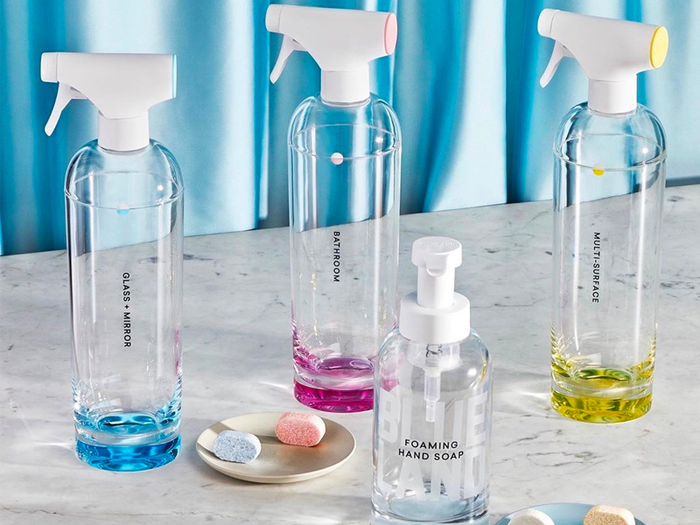
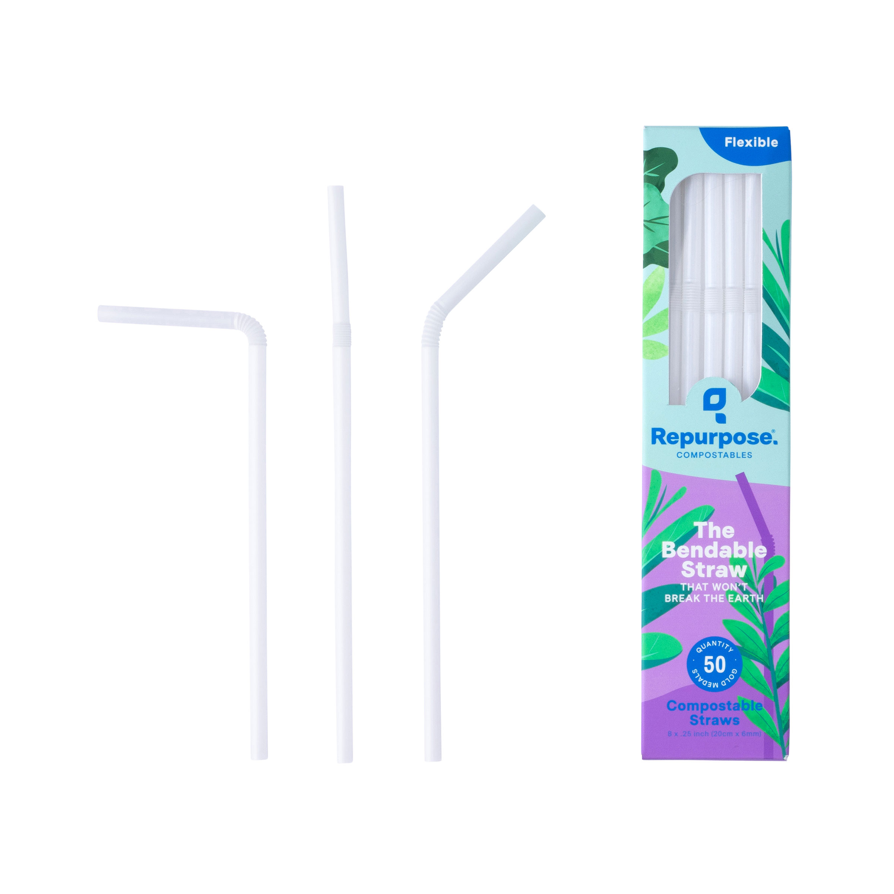
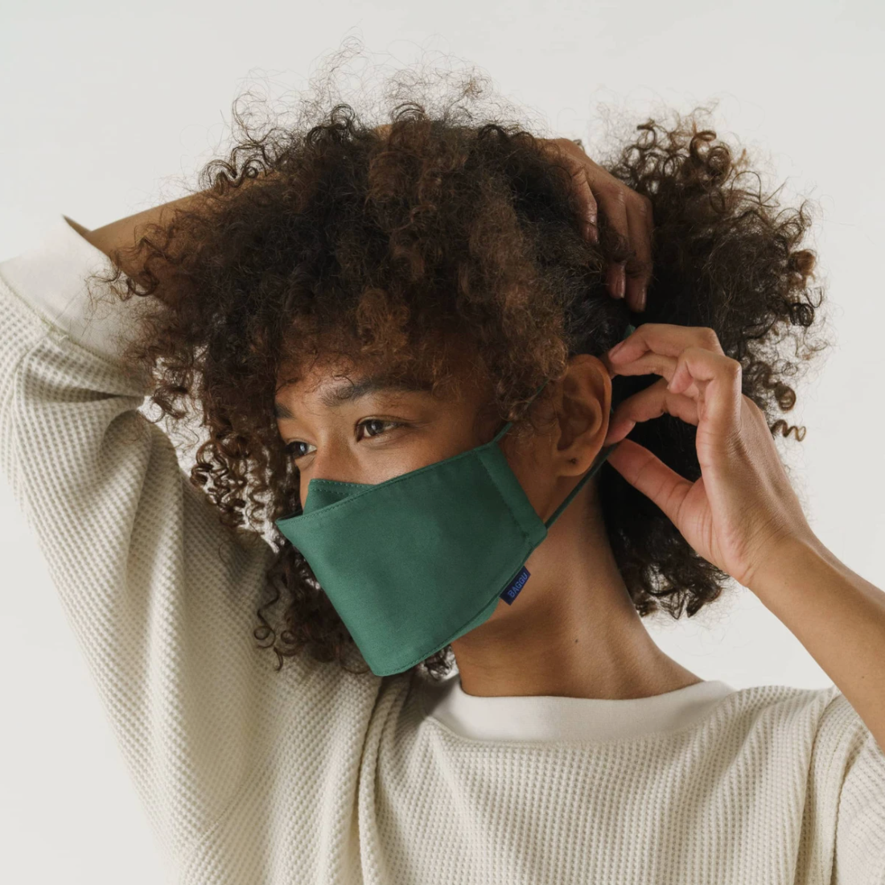
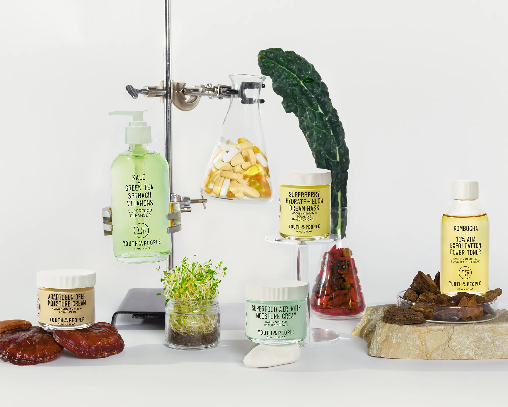
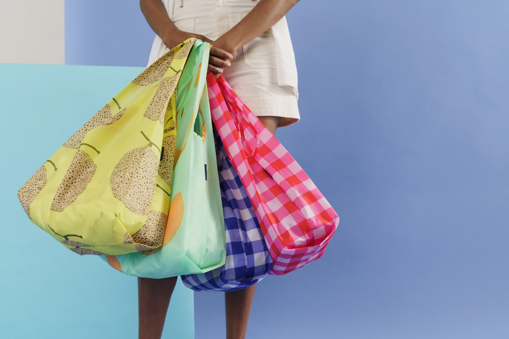
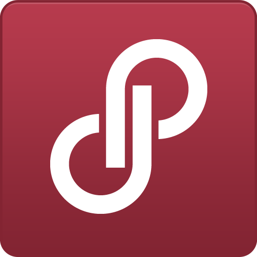
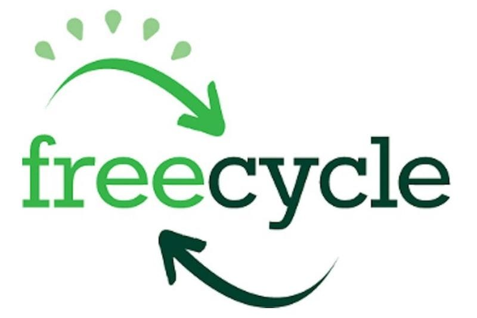
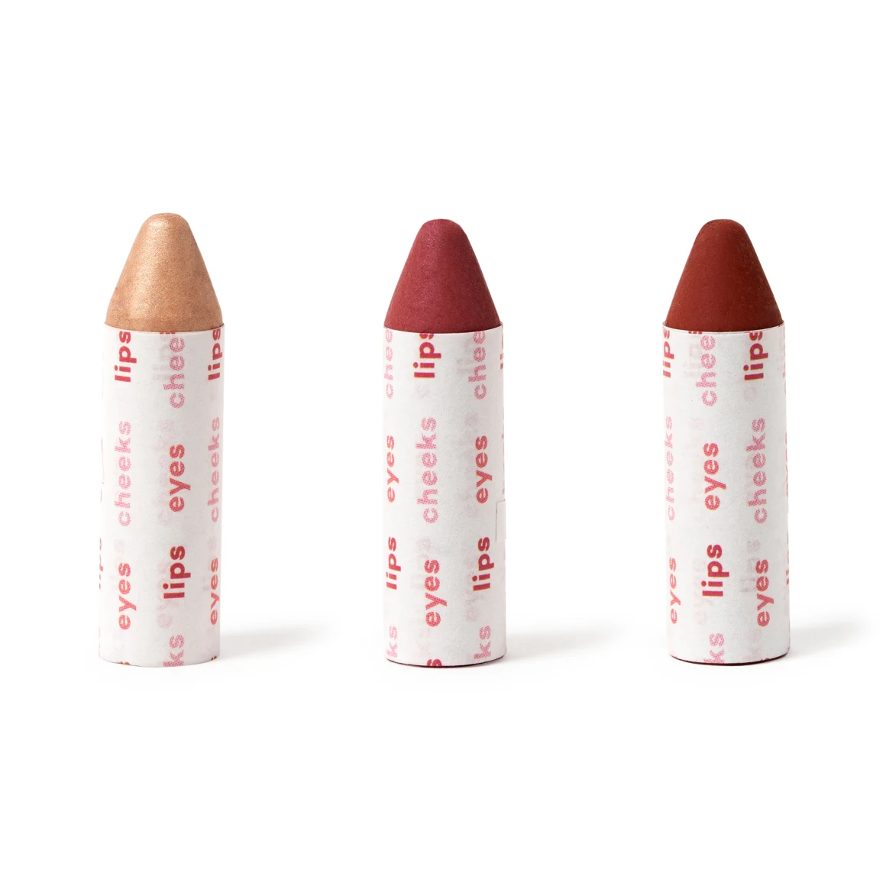
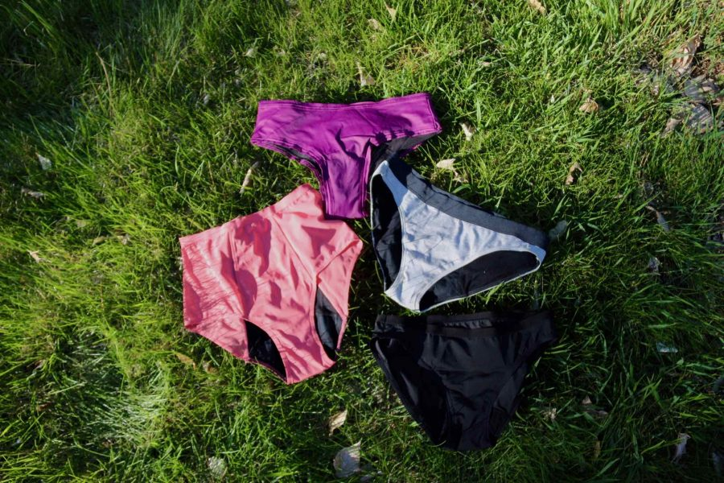
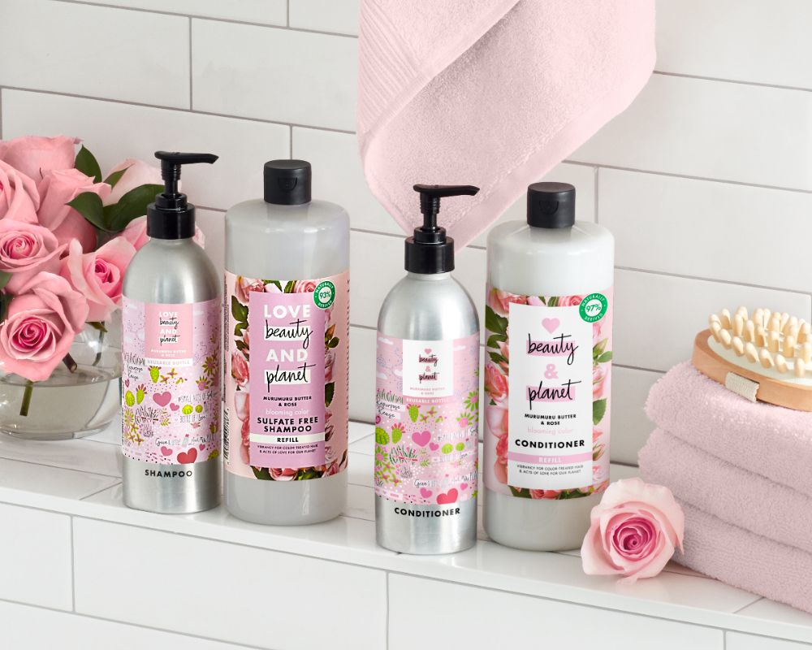

Sustainable Products for Everyday Life
Why do you recommend these products?
All of the products are easily accessible online and they are cost-efficient. I always try to find sustainble products that are genuine alternatives to the experience of the product I am trying to cut out. All of the products below are highly rated for their durability and ability to achieve tasks regardless of them being made with less waste.
Blueland Products
{kind=link}
Blueland produces items such as dishsoap, handsoap, laundry & dishwasher pods, and dish soap. Their mission is make all these products refillable rather than replacable. After your first purchase, you can buy refills that are all in tablet form. Not only are the products themselves eco-friendly, but the packaging uses paper-based tape, water-based inks, and compostable refill packaging.
Biodegradable Straws
{kind=link}
When people typically think of sustainable straws, they think of metal and paper. Both do not have the same texture as a plastic one, which makes it hard for people to ditch their ways. Repurpose sells compostable straws that are made of plants that feel like straws and are incredibly strong.
Reusable masks
{kind=link}
Baggu is the right choice for reusable masks because they focus on minimizing fabric waste and making them strong enough to last a lifetime. They are also a great choice because of the many fun patterns and how breathable they are. Another great reusable mask are the Athleta brand ones, which are great for working out in.
Vegan Skincare
{kind=link}
Not only is Youth to the People skincare vegan and cruelty-free, but their packaging is incredibly eco-friendly. Each serum and liquid is in glass packaging which can be recycled infinitely, and everything is made locally in California. They are also made for sensitive skin and have everything from face wash to masks.
Shopping bags
{kind=link}
Another great product from Baggu is their reusable bags, which can be used for all your shopping needs. Not only do they come in many fun patterns, but they can fit a lot of items and are lightweight yet strong. Baggu bags come with a small pouch so that it can be bunched up into the pouch, which makes it perfect for putting in your backpack.
Poshmark
{kind=link}
For clothes, a great place to go is Poshmark. Poshmark allows its users to sell and buy worn clothes thus reducing the waste problem. I'd consider it to be better than DePop in terms of sustainability because unlike DePop, more people are selling stuff that are actually secondhand and cheap rather than new to resell for profit.
Freecycle
{kind=link}
If you are looking to give away your items, don't throw them away. A great way to get rid of things is to post them on Freecycle because you don't have to worry about the quality of the item since it's all free. Freecycle is perfect for if you are lazy and don't want to deal with shipping through eBay or for items that you don't think are sellable for a profit.
Eco-friendly makeup
{kind=link}
For a sustainable makeup option, Axiology Beauty has zero waste 3-1 Crayons that are the utmost sustainable option. Not only are they wrapped in recycled paper, but the packaging is all made of 100% recycled paper waste. They have been rated highly in magazines such as Allure for the quality of it, and they have a lot of different products that suit all shades of skin.
Reusable period underwear
{kind=link}
When it comes to period products, an incredible amount of waste is generated from tampons and pads due to their excessive packaging. Not to mention, basically all store-brought brands must be thrown into landfills. Thinx sells period underwear that withstands 5 tampons worth of blood and can be thrown in the wash. If you are not willing to transition to period underwear immediately, another good alternative is biodegradable tampons from The HoneyPot Co.
Shampoo and Body Care
{kind=link}
Not only does Love Beauty and Planet share cheap hair and body care lotions, but their packaging is made of 100% recycled plastic. They also have thousands of volunteers participating in global beach cleanups as a way of helping the environment. Their products are all less than $10 and are sold everywhere such as Target, CVS, and Walgreens, which are quite common in college areas.